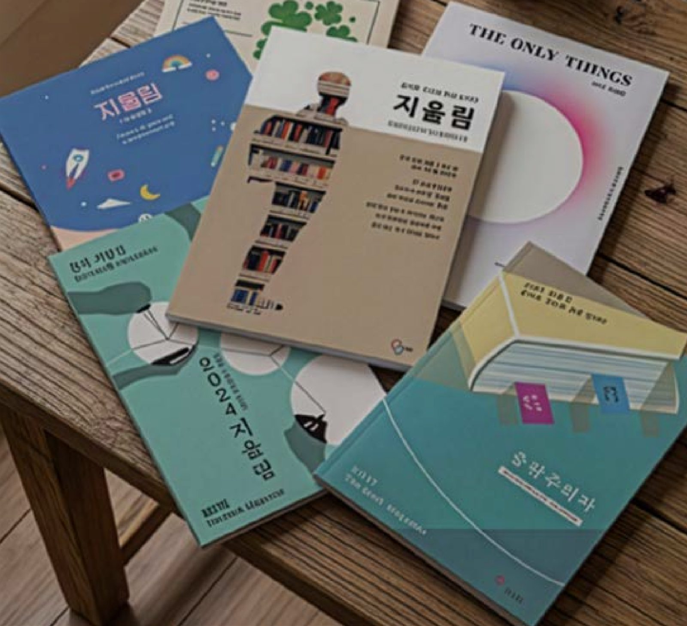
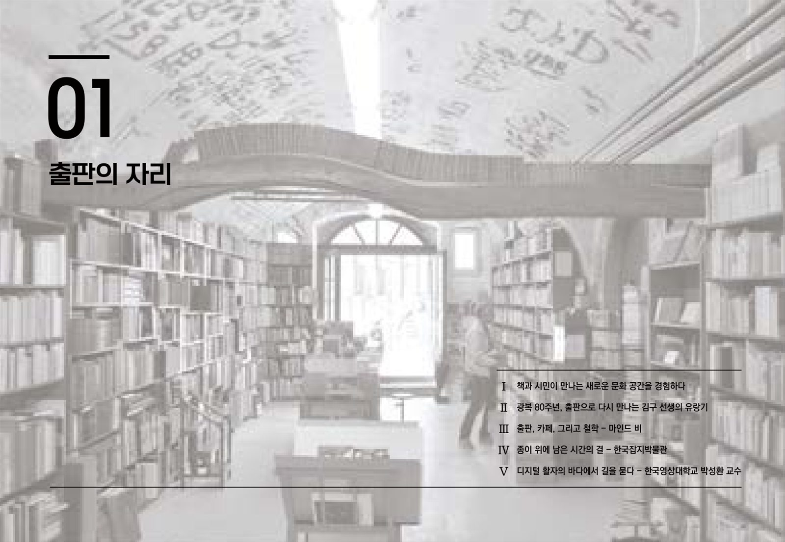
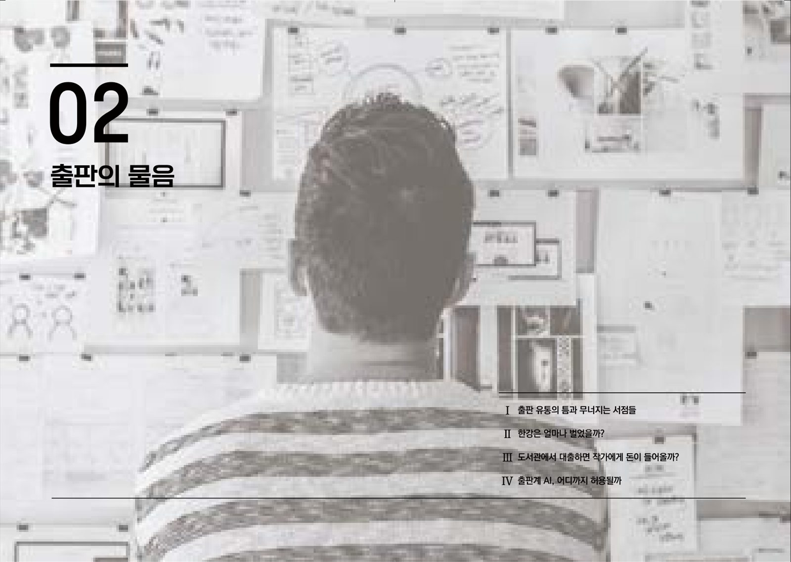
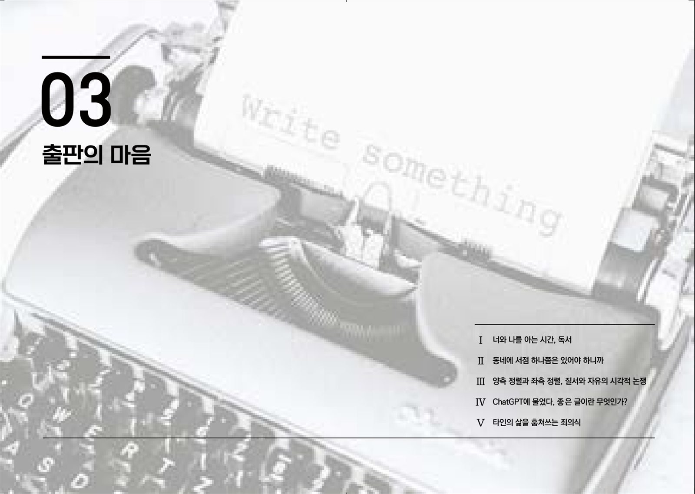
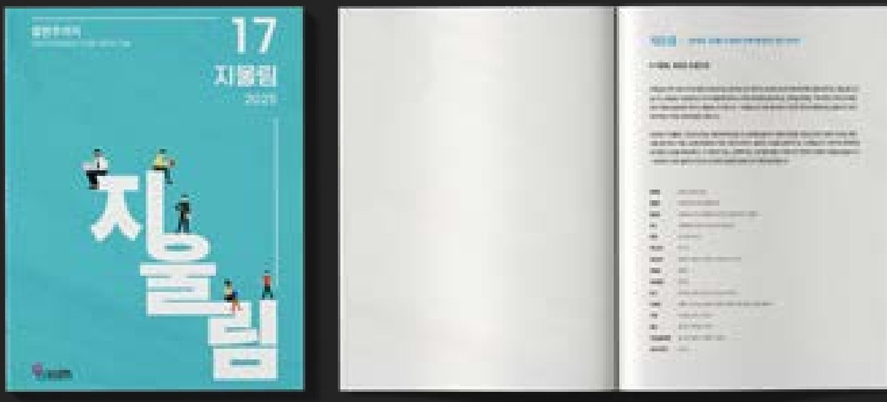
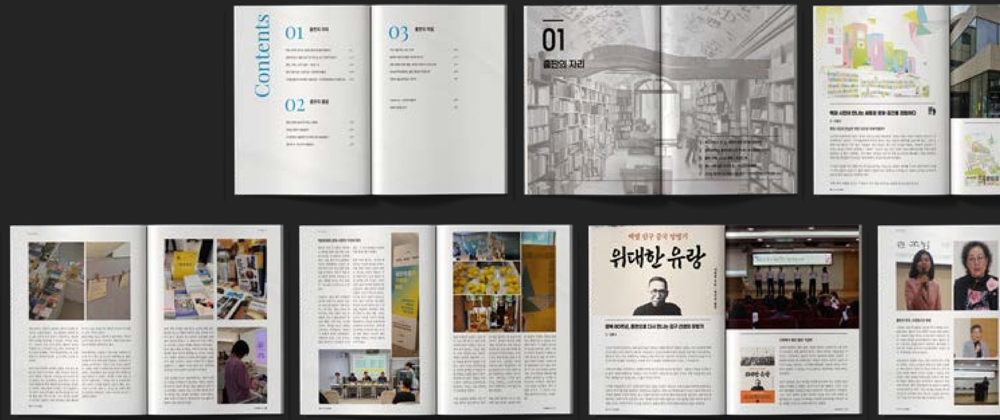
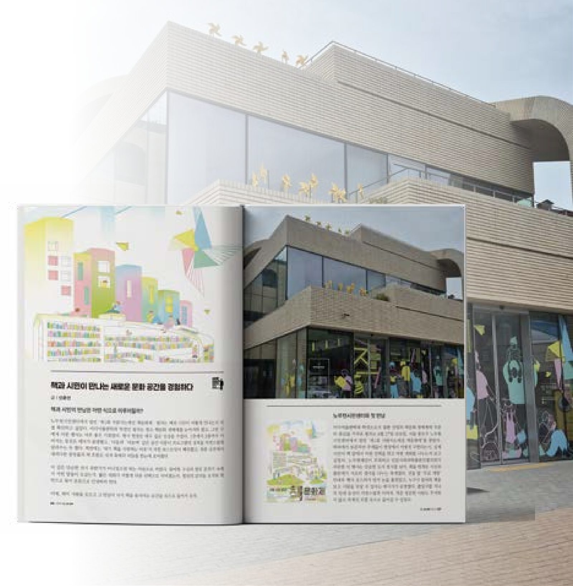
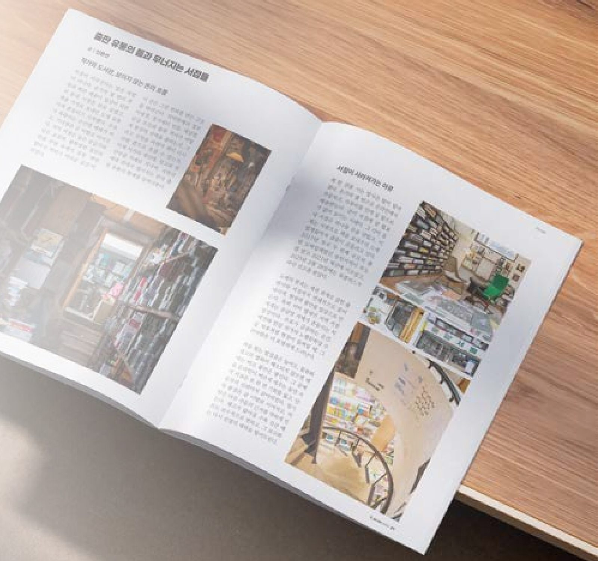

01 / Magazine
출판주의자
2025년 『지울림』 17호의 주제는 ‘출판주의자’입니다. 출판을 둘러싼 사람과 현장을 직접 담아낸 다양한 인터뷰, 현장성을 살린 행사 기록, 시선을 확장하는 자유 기획기사까지, 출판의 오늘을 입체적으로 구성했습니다.
- Issue
- 『지울림』 제17호 (2025)
- Role
- 원고 수록, 내지 편집, 인쇄/배포 총괄
- Contribution · Size
- 80% · B5 (182×257mm)
- Tools
- Photoshop · InDesign

About 지울림
지(紙)울림: 종이를 통해 우리의 뜻이 반향을 일으킨다. 2009년에 개설된 서일대학교 미디어출판학과의 벤처 창업 및 잡지 제작 동아리로, 잡지 ‘지울림’을 연간지로 제작해 무가지로 배포합니다. 기획 및 편집, 디자인, 마케팅/홍보 등 잡지 제작의 전 과정에 참여합니다.
Why it matters
대학생의 시선에서 시작되는 다양한 콘텐츠를 기획하고 독자들에게 다가갈 수 있는 방향을 마련합니다. 필드로 나가기 전에 실무 작업을 체험하며, 어느 한 분야에 치우치지 않고 다양한 업무를 경험할 수 있습니다.




Point 01
이미지 톤 조정
서점 내부 사진을 흑백 톤으로 편집해 배경의 시각적 대비를 낮추고, 텍스트가 명확하게 드러나도록 구성했습니다.
Point 02
레이아웃 구성
좌측 상단에 챕터 번호와 제목을 배치하고, 우측 하단에는 수록 기사의 소주제를 목차 형식으로 정리했습니다. 각 요소의 위치와 크기를 달리해 섹션의 시작과 수록 기사의 구성을 직관적으로 전달했습니다.
Point 03
본문 편집
본문 폰트와 자간, 행간을 조정하고 텍스트와 이미지 사이의 간격을 수정해 지면의 가독성을 높였습니다. 페이지마다 달랐던 편집 요소를 점검하고 일관된 기준으로 정리해 잡지 전체의 통일감을 확보했습니다.
Point 04
교정 및 최종 수정
도비라 디자인은 지도교수와 여러 차례 의견을 주고받으며 수정·보완했습니다. 피드백을 반영해 최종 지면을 완성하고, 내지 편집과 함께 전체 결과물을 점검해 최종 인쇄를 진행했습니다.


책과 시민이 만나는 새로운 문화 공간을 경험하다

‘제1회 사람사는세상 책문화제’를 방문해 책과 시민이 만나는 현장을 관찰하고, 출판 문화가 사람들의 소통과 경험으로 확장되는 과정을 살펴봤습니다. 행사 공간과 프로그램 구성, 출판사와 독자 간의 상호작용을 바탕으로 책문화제가 지닌 문화적·사회적 의미를 분석했습니다.
01
현장 관찰을 통한 공간 분석
노무현시민센터의 층별 공간 구성과 관람 동선, 참여형 프로그램을 관찰하며 방문객이 자연스럽게 행사에 참여할 수 있도록 설계된 공간의 특징을 살펴봤습니다.
02
출판사와 독자의 상호작용
출판사와 독자가 책을 매개로 대화하고 서로의 생각을 나누는 모습을 통해, 책의 기획 의도가 독자와 만나는 과정과 현장 중심의 출판 문화가 형성되는 방식을 조명했습니다.
03
책문화제의 문화적·사회적 의미
책이 단순한 소비의 대상을 넘어 시민 간 소통과 문화적 교류를 이끄는 매개가 될 수 있음을 살펴봤습니다. 관람 동선과 참여 방식의 개선점을 함께 짚으며 행사의 발전 가능성을 제시했습니다.
출판유통의 틈과 무너지는 서점들

온라인 중심의 유통 환경과 불균형한 출판 유통 구조 속에서 지역 서점은 책을 판매하는 것만으로 생존하기 어려운 상황에 놓여 있습니다. 도매업체의 파산과 지역 서점의 폐점 사례를 출발점으로, 위탁판매 제도와 도서정가제의 한계를 분석하고 출판 유통 구조의 개선 방향을 살펴봤습니다.
01
출판 유통 구조의 문제
위탁판매 과정에서 발생하는 정보 비대칭과 불투명한 정산 구조를 분석하고, 출판사와 서점이 겪는 재고 및 대금 회수 문제를 짚었습니다.
02
대형 서점과 지역 서점의 격차
도서정가제의 변화와 유통 채널별 공급 조건의 차이를 살펴보며, 대형 서점과 지역 서점 사이의 구조적 불균형이 어떻게 형성되는지 조명했습니다.
03
지속 가능한 출판 유통을 위한 대안
완전 도서정가제의 한계와 유통 정보의 전산화 필요성을 함께 검토하며, 출판사와 서점 간 정보 공유 및 효율적인 물류 체계 구축의 중요성을 제시했습니다.